Overview:
Hi, I’m Zakariya, a Software Engineering graduate and aspiring backend developer focused on building practical systems. This portfolio documents my journey from academic software engineering into industry-ready development. My work includes client-based university projects, random automation scripts and continuous learning projects such as the 100 Days of Code challenge.
I’m particularly interested in Python backend development and scalable system design. I enjoy solving logical problems and turning ideas into functional software. Currently, I’m focused on strengthening my core programming fundamentals, data structures and problem-solving ability while building projects that reflect real engineering workflows. This site acts as my development “save point” , a record of progress as I work toward becoming a professional software engineer.